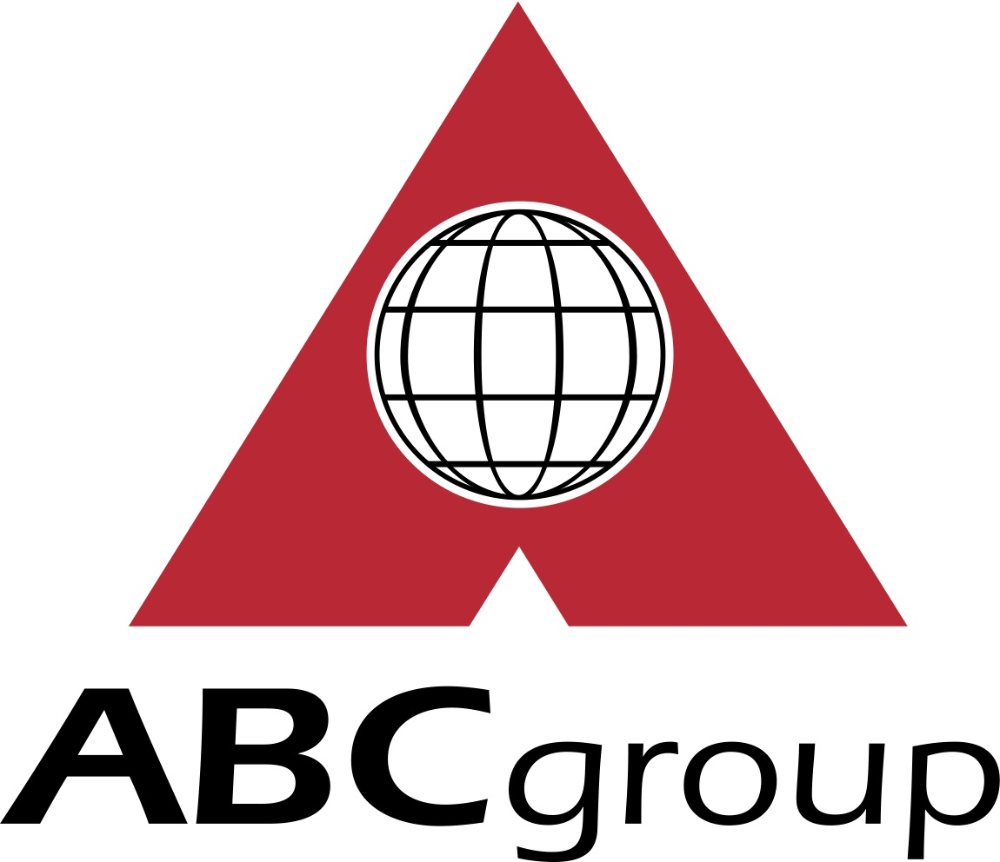
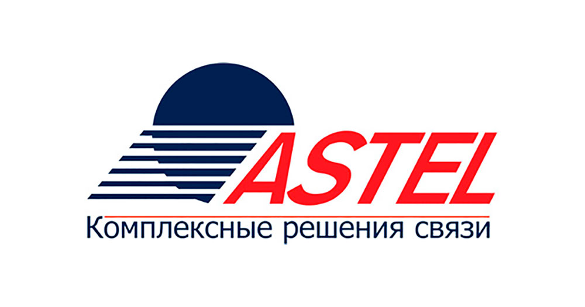

Igor Zavadovskyi
2012 - February 2018
Beko Ukraine
Commercial Director
Main responsibilities
- Country Sales and Channel strategies preparation in accordance with Arcelik Group strategies
- Preparation and implementation of Annual Sales budget
- Development of business with major accounts (listing strategic products into matrix, achieving sell in/out targets, control of distribution, sell-out activities planning, orders, monthly forecasting and budget planning and control)
- Coordination of Sales department and Product marketing, trade marketing teams and regional managers’ activity to achieve targets with assigned Partners
- Retail and wholesales channels pricing strategy development and management
- Monthly sales planning and forecasting analysis
- Cooperation with Marketing and logistics teams in terms of sales volumes forecast budgeting, ordering and marketing planning
- Negotiations with Customers
- Coordination and initiation of new product definitions
- Audit of National Retail Chains shops in terms of price monitoring, competitors’ activities analysis etc.
- Follow the transactions (leads, billings, orders, contracts), control payments from Key Account Clients
- Planning and supervising of promo activities with Partners
- Management of Sales representatives, coaching and development
- Take necessary actions and implement tactics to reach Company KPIs: OP, Models efficiency, Market share, Price index, Weighted distribution
Achievements
- Proposed and implemented sales and marketing strategy resulted in Market share increased to the level of 8,7% from 0,5% in 2 years
- Effective sales team was created and coached
- No.2 position in terms of In-House share was gained in the biggest Nationa retail chain in the country
- On-time action plan proposed and implemented aiming to avoid financial losses during huge currency devaluation in the country
July 2009 - December 2012
 LG Electronics Ukraine
LG Electronics Ukraine
Sales Leader Home appliances
Main responsibilities
- Developing business with major accounts (listing strategic products into matrix, achieving sell-in targets, control distribution, planning sell-out activities, orders forecasting and budget planning and control)
- Analyzing current business process (P&L per account per product) and developing Consumer Electronics Sales Strategy and account plans for all Ukrainian Consumer Electronics key-clients for 2010
- AR control
- Coordinating sales, product marketing, trade marketing teams and regional managers’ activity to achieve target IHS in the assigned clients
July 2008 - July 2009
Exon Recruiters
Consultant
Main responsibilities
- Business development opportunities analysis
- Research, negotiations and development of new customers
- Identifying customers’ needs and proposals of possible solutions
- Business conditions negotiations, agreement, contract signing
- Candidates search, screening to identify professional and personal skills requested for positions
- Payments control
April 2005 - July 2008
Indesit Company
Key Account Manager - National Retail (Chains)
Main responsibilities
- Supporting high level of sales in National Key Retail Accounts (Foxtrot, Eldorado, ABV Technika, Techno-Expert)
- Responsible for negotiations with clients
- Planning and supervising promo activities in Key Accounts
- Managing sales representatives, coaching and development
- Sales planning and analysis
- Wholesales promotion planning, analysis and support
- Control of payments from Customers
- Cooperation with logistics & marketing in terms of sales volumes forecast, budgeting and marketing planning
January 2004 - April 2005
ABC-Group
Supervisor of Indesit Company Merchandisers Team, Sales project Supervisor
Main responsibilities
- Managing of Merchandisers (8 sales representatives managed)
- Support of Marketing Department (price positioning, competitors activities etc.)
- Improvement of Price Control system
- Assistance to Trade Marketing Manager in elaboration & implementation of trade marketing plans
- Budgeting & development planning of Merchandisers Team
- Direct sales project clients sell in
- Search for new clients and distribution opportunities
- Organization of information support for potential & existing clients
- Short term and long term planning
- Direct of the transactions (leads, billings, orders, contracts)
December 2001 - January 2004
Samsung Electronics
Merchandiser, IT and Telecommunication Department
Main responsibilities
- Audit of National Retail Chains shops (Unitrade, Astel, Allo) in terms of price monitoring, competitors activities analysis etc.
- Consumer promotions working out, preparation and their realization control
- Retail incentive (loyalty) programs working out, preparation & implementation
- POS materials working out initialization, detailed orders (with quantity & sets preparation division per outlet) preparation, placement, checking
- Product merchandising control
- Trainings & event preparations
- Presentations on product & promotions preparing and conducting
Septemver 2000 - December 2001
Astel Co Ltd, PB “Mascot”
Shop Manager
Main responsibilities
- Sales analysis and planning
- Product range analysis, development & maintaining
- Maintenance of range of goods, product ordering
- Price policy development
- VIP -clients programs development & support
- Motivation, and performance evaluation of sales assistants (6 direct subordinates)